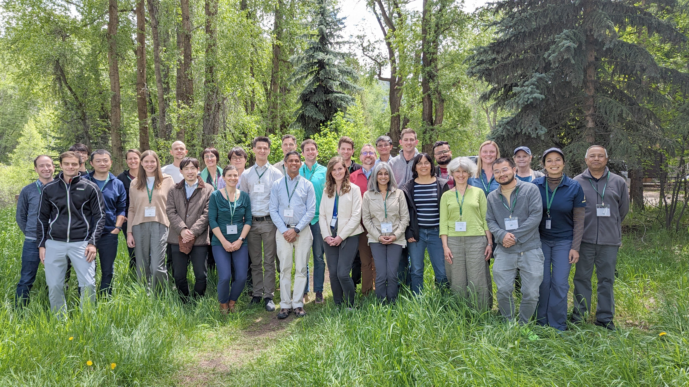

Irrigation accounts for ~70% of global freshwater withdrawals and ~90% of consumptive water use, driving myriad Earth system impacts. In this Review, we summarize how irrigation currently impacts key components of the Earth system. Estimates suggest that more than 3.6 million km2 of currently irrigated land, with hot spots in the intensively cultivated US High Plains, California Central Valley, Indo-Gangetic Basin and northern China. Process-based models estimate that ~2,700 ± 540 km3 irrigation water is withdrawn globally each year, broadly consistent with country-reported values despite these estimates embedding substantial uncertainties. Expansive irrigation has modified surface energy balance and biogeochemical cycling. A shift from sensible to latent heat fluxes, and resulting land–atmosphere feedbacks, generally reduce regional growing season surface temperatures by ~1–3 °C. Irrigation can ameliorate temperature extremes in some regions, but conversely exacerbates moist heat stress. Modelled precipitation responses are more varied, with some intensive cropping regions exhibiting suppressed local precipitation but enhanced precipitation downstream owing to atmospheric circulation interactions. Additionally, irrigation could enhance cropland carbon uptake; however, it can also contribute to elevated methane fluxes in rice systems and mobilize nitrogen loading to groundwater. Cross-disciplinary, integrative research efforts can help advance understanding of these irrigation–Earth system interactions, and identify and reduce uncertainties, biases and limitations.
